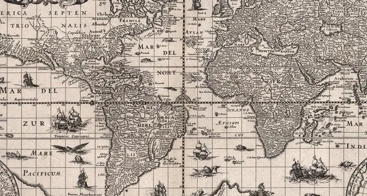

Development in a Historical Perspective
Course syllabusSince 2025 · UTVC21
Course convener
Teacher of the Year, 2020. Lund University School of Economics and Management.
Since 2025 · UTVC21
Course convener

Since 2019 · EOSE02
Lecturer
Lund University
2024
Bachelor’s · UTVC23 · Lecturer
2023–2026
Bachelor’s · EKHB21 · Lecturer & course convener
2022–2023
Master’s · EKHM84 · Lecturer
2020
Bachelor’s · EOSE06 · Lecturer
2019–2026
Bachelor’s · EOSE08 · Lecturer & course convener
2019–2026
Bachelor’s · EKHK17 · Lecturer & course convener
2019–2024
Master’s · EKHM61 · Lecturer
2019–2020
Bachelor’s · UTVC26 · Lecturer & course convener
For course descriptions, supervision enquiries, or letters of recommendation, please get in touch.